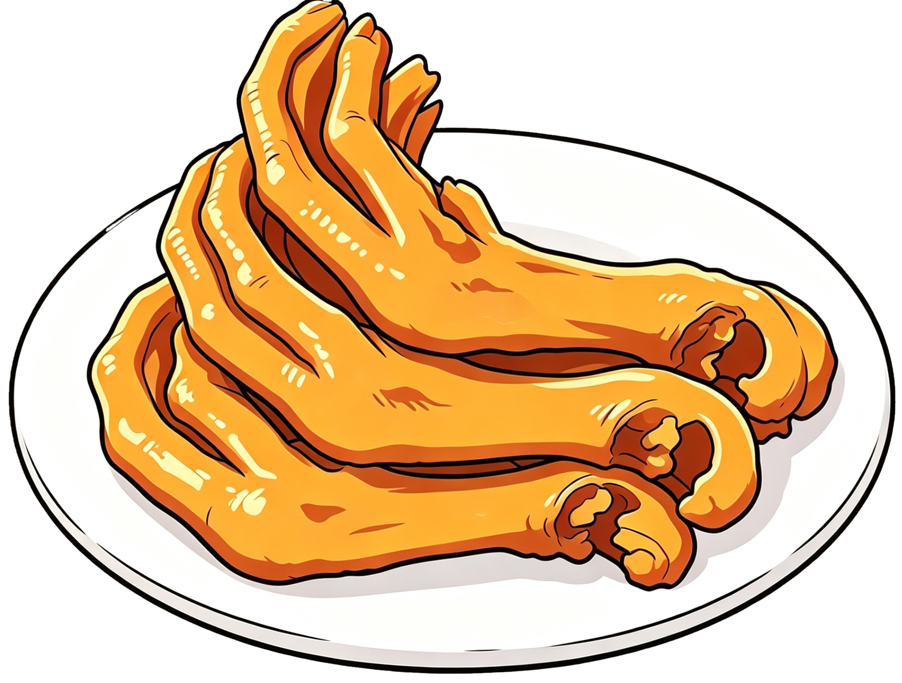
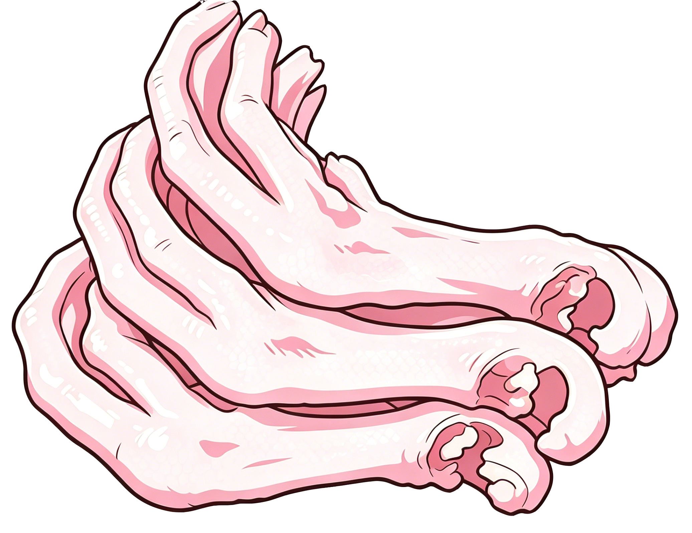
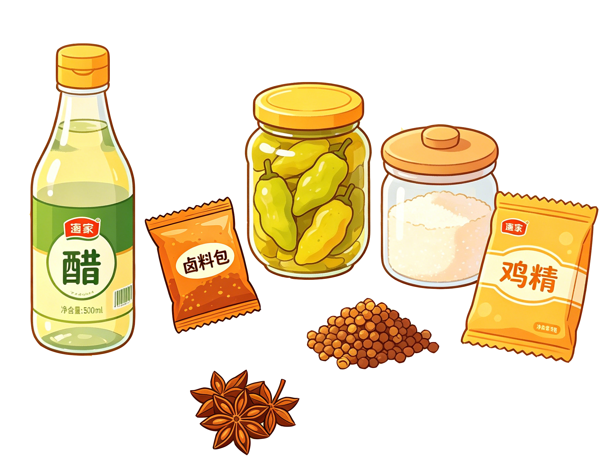
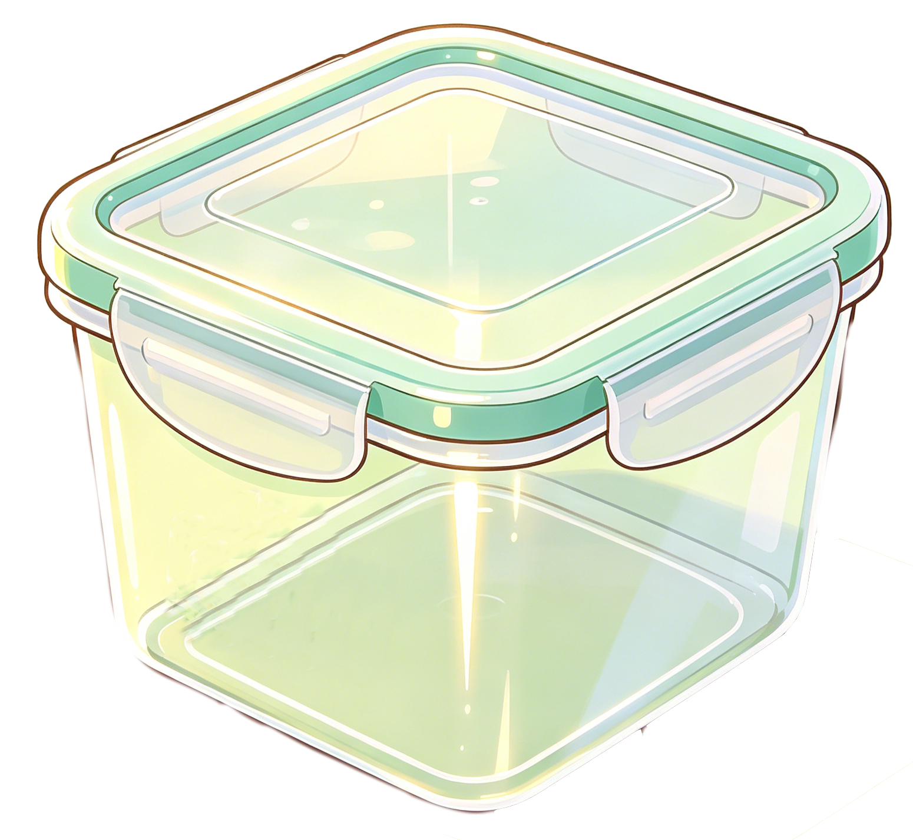
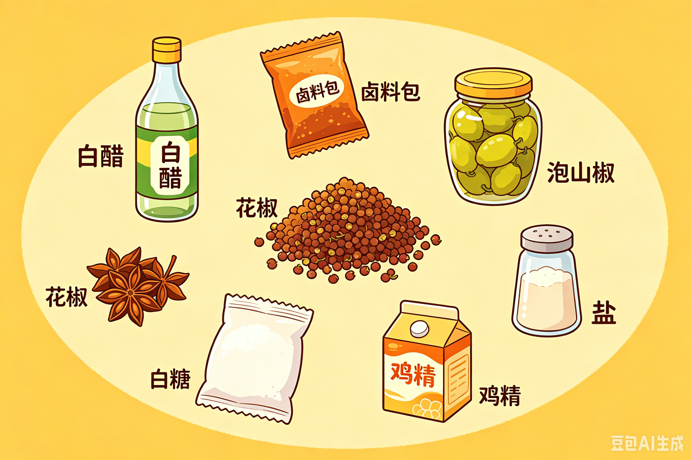
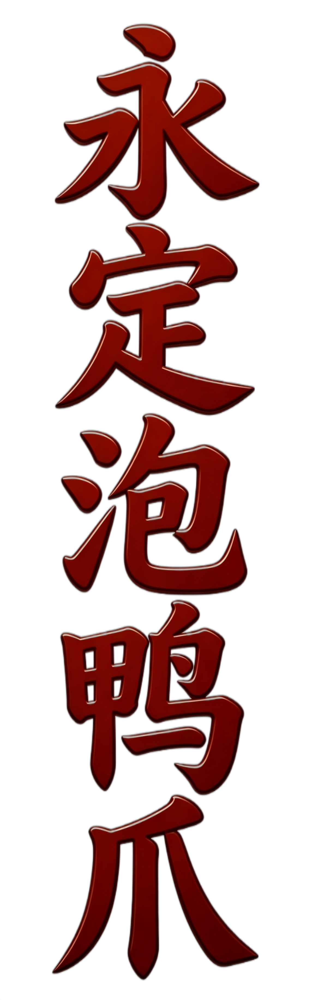

明末清初，闽西民众多以樵耕为生，当地树木丛生，瘴气湿气浓重。从中原迁徙而来的客家人，为驱寒避暑，在自制酸菜的基础上，将每年年关鸡鸭的爪子和内脏放置到醋坛中浸泡食用。体现了"药食同源"的生存智慧，象征着客家人乐观的生活态度。

① 准备原料
选择新鲜的鸭爪、糟卤、白醋、泡山椒、花椒、白糖、鸡精、盐等。


② 焖煮
锅内加水，葱料酒八角桂皮花椒鸭爪锅开后烧半分钟熄火捞出冲凉洗净再放入凉开水盒内凉透。


③ 腌泡
腌泡盒中先放一袋糟卤+白醋+泡山椒+花椒+白糖+味精+盐，腌泡一到两天即可食用。

